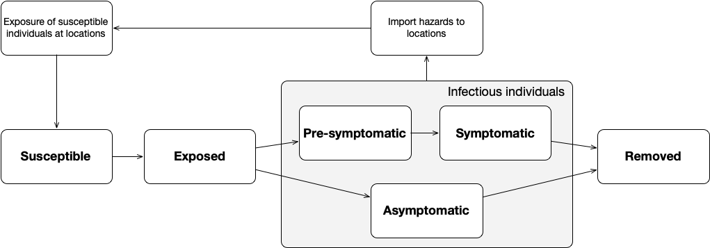

CDRC Data Partner Forum.
University of Leeds, 31st October 2023
Virtual Mirrors or Smoke and Mirrors?
Can Urban Digital Twins Make Cities Better?
Nick Malleson, University of Leeds, UK
Slides available at:
https://urban-analytics.github.io/dust/presentations.html
Critical (urban?) social problems
Children in the most deprived neighbourhoods have 10 years shorter life expectancy than those born in affluent neighbourhoods.
The use of food banks has increase by 81% in five years
Rape has effectively been decriminalised (in 2021 only 5% of recorded rapes resulted in a charge).
A third of English children leaving primary school are overweight or living with obesity
Can urban digital twins help?
What are Digital Twins?
A synthesis of computer models, sensor networks, visualisations, etc., that mirror a real-world system, product or process

"Precise, virtual copies of machines or systems"
Examples:
Machines / products;
Manufacturing (factories);
Health / hospitals;
Smart Cities (e.g. Singapore, Victoria, Bradford);
... many others ...
But lots of 3D models. Few twins
What might an (urban) digital twin look like?

Challenges for Urban Digital Twins
Challenges
Simulating Complex Urban Systems
Non-linearity, emergence
Behaviour and interactions of people
Difficult to abstract, risk of "smoothing out"
Need models that can account for these complexities
(Role for ABM?)
Challenges
Uncertainty
Many sources of uncertainty (Ghahramani, 2015; Edeling, et al., 2021):
Need to understand and be honest about uncertainties
Uncertainty Quantification can help (but relevant to DT models?)
Data
Even in the 'Age of Data', there are huge unknowns
Models (DTs) can be extremely detailed, but typically only coarse data are available
Challenges

Computation and Model Synthesis
DTs are a "synthesis" of computer models
BUT: (Very!) computationally expensive models
Innovations in (e.g.) meteorology not necessarily applicable to urban DTs
Also technical challenges coupling models
Individual models are fragile, when combined ... ⚠
Progress towards urban digital twins
'Big' Data and Urban DTs
Pedestrian Mobility
Growth in availability of data for quantifying the 'ambient population'
Census, travel surveys, mobile phone activity, card payments, smart phone apps, social media, pedestrian counters (WiFi, CCTV)
Model synthesis
DyME: Dynamic Model for Epidemics
COVID transmission model with components including:
dynamic spatial microsimulation, spatial interaction model, data linkage (PSM), ...
Represents all individuals in a study area with activities: home, shopping, working, schooling
Daily timestep
DyME Validation Drawback: Data
Incredible detailed model!
BUT only data available for validation: COVID cases and hospital deaths
Only quantify a tiny part of the transmission dynamics
Huge uncertainties
Building the model was the easy part ...
Progress: Uncertainty Quantification

Many sources of uncertainty. Leverage uncertainty quantification?

Dynamic Calibration for DyME
Why we need Data Assimilation
Complex models will always diverge
(due to inherent uncertainties in inputs, parameter values, model structure, etc.)
Possible Solution: Data Assimilation
Used in meteorology and hydrology to bring models closer to reality. Combines:
Noisy, real-world observations
Model estimates of the system state
Data assimilation v.s. calibration

For more information: urban-analytics.github.io/dust/.
Are they worth it?
Are they worth it?
Can urban digital twins help? Or should we focus on lower-hanging fruit?
Who will use them?
Will they help with ...
Life expectancy (can vary by 10 years)
Food banks
Pitiful rape (and others) prosecution and conviction rate
Obesity
CDRC Data Partner Forum.
University of Leeds, 31st October 2023
Virtual Mirrors or Smoke and Mirrors?
Can Urban Digital Twins Make Cities Better?
Nick Malleson, University of Leeds, UK
Slides available at:
https://urban-analytics.github.io/dust/presentations.html